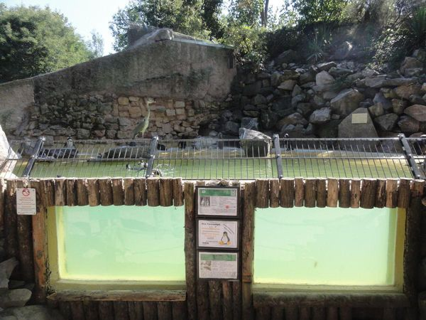

Construction Design for the Enclosure of Rockhopper Penguins

Designing an appropriate enclosure system is very important for the welfare of these captive rockhopper penguins. These enclosures must be designed to mimic the characteristics of the natural environment of the penguins and maintain proper hygiene to facilitate effective preventive health management practices in the penguins. The size of the enclosure must have adequate space for the day-to-day activities of individual captives, including swimming space, movements, and colony interactions (Fanning et al., 2020). Limited space can lead to aggressive behaviour among the individual colony members, leading to stressful behaviour and increased chances of disease transmission. Penguins must be provided with sufficient space on both land and in water, to perform their regular activities (Kim et al., 2024). Land must be adequate for purposes such as sleeping, moulting, and reproduction, while there should be sufficient water for swimming, exercise, and hunting for food. According to Hamburg (2018), the land and water ratio in a suitable enclosure should be around 8.7:1, where the terrestrial area should span 282.22 m² and the water area around 30.82 m² . Additionally, a quarantine area of around 2.87 m² and a quarantine pool of 2.70 m² to house adequate living space for the captive birds are needed. Additionally, a designated shelter area is needed to protect the birds from external environmental factors such as changes in temperature, humidity, and stress from human visitors. Improper management of environmental conditions leads to susceptibility to diseases (Itoh et al., 2023).

Additionally, rockhopper penguins require rocky terrain, different substrates, and nesting areas, given the rock-nester nature of the species, promoting behavioural diversity.